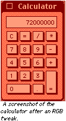

| Pros: Provides a wide array of uesful graphics functions. Can duplicate
pictures. Useful example project. Cons: Slow. Can only rotate in 90° increments.
|
Ian's Picture Effects
| Author: Ian L. Price: <free> Download: cafe.realbasic.com (Hotline) |
Recently, I've been reviewing a huge amount of classes by Ian L. No, I'm not under some strange voodoo curse, but this is becoming a pattern. Why? Because there's an incredibly large number of them!
 The latest in this set is Ian's Picture Effects, which provides methods to rotate pictures 90° in any direction, scale pictures easily (without using DrawPicture's 100s of parameters), duplicating pictures, brightening and darkening them, flipping them, cropping them, and tweaking their RGB components.
In my opinion, the most interesting function is the RGB Tweak one. As you can see from the screenshot to the right, it increases or decreases the amount of Red, Green, and Blue in a picture based on the parameters you pass it. This can be useful, and can produce some interesting effects.
Another intersting function is the duplicate picture one. Usually, one would think that to duplicate a picture, you'd create a new picture variable, and use a statement like newpic=oldpic. This should duplicate it, right? Wrong! This only creates a pointer to it. So, any changes to oldpic are changed in newpic, and vice-versa. This can lead to a messy situation if a duplicate is what you really wanted. The duplicate picture method provides an easy and fast way to create a true duplicate of a picture.
This leads me to another function: scaling. Many people would say that this function is pointless. After all, you can do the exact same thing with the drawpicture method of the graphics object, right? Well, that is true, but the three parameters that this method takes are far less intimidating than the 9 that DrawPicture takes.
So what's the final word? Picture Effects provides 10 very useful
effects for pictures, and it's an open source module–always a good thing. There's
only one problem. It's slow. VERY slow. However, this isn't neccesarily a problem
with the class. Functions like these are built-in to the Apple Toolbox, and are lightning
fast (heck, some programs perform them in realtime). Since you can't access the toolbox
from RB, we must live with slow yet useful modules like this. At least until picture
plugins come in (and they will).
| Pros: Provides a wide array of uesful graphics functions. Can duplicate
pictures. Useful example project. Cons: Slow. Can only rotate in 90° increments.
|